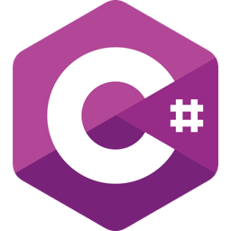

Development of Global Navigation Satellite Systems and Global Positioning Systems into Virtual Worlds a site training tool. some of the developed features were:
• Developed Line-of-Sight System to simulate GNSS signal interference.
• Simulated accuracy degradation when user is under buildings.
• Visualised GNSS and implemented Dilution of Precision.
• Develop quests to that teach users on GNSS technologies.
Tools suite

Unity SDK

C#

VS Code